PHOTOSPHERE
Unique desktop cloud storage system for photographs.
my roles
SOLE UX | UI DESIGNER ON PROJECT
UX / UI Designer
Brand Developer
Visual Designer
Information Architect
Content Creator

PROBLEM
When it comes to cloud storage, many users feel it is not specialized enough for photograph storage alone. Additionally, the client requested the ability to upload, save, organize, create, share, and collaborate.

Competitive Analysis
User Surveys
User Personas
User Stories
User Flows
Lo Fi Wireframes
Style Guide
Logo Design
Hi Fi Mockups
DELIVERABLES
The solution is Photosphere: a service specialized for the storage of photographs, which offers users the ability to upload, save, organize, create, share, and collaborate, as well as save content
within the site.
SOLUTION

COMPETITIVE ANALYSIS
FLICKR, SMUGMUG, GOOGLE DRIVE
A competitive analysis helped me to focus on companies strengths, weaknesses, opportunities, and threats - I was able to see what was already being done well within different cloud storage platforms so I could build from that and learn from their mistakes.
SmugMug offers a free trial for two weeks.
Photosphere will offer a better free option.
SmugMug’s logo isn’t memorable or strong.
Photosphere will need a strong logo.
Flickr's icons do not have words by them.
Photosphere’s icons will need words.
Reaching Flickr's footer feels impossible.
Photosphere’s interface will not autoload.
Google Drive has strong, simple branding.
Photosphere will need simple branding.
Google Drive is not specific to photography.
Photosphere will be for photographs.
MAJOR TAKEAWAYS: If I were to do anything differently, I would analyze one last photography-specific site. I selected Google Drive, as many users surveyed stated that they used it most. I would also try to tap into SmugMug’s portfolio-style presentation for professional photographers.
VIEW ANALYSIS
USER SURVEYS
THE USER COMES FIRST
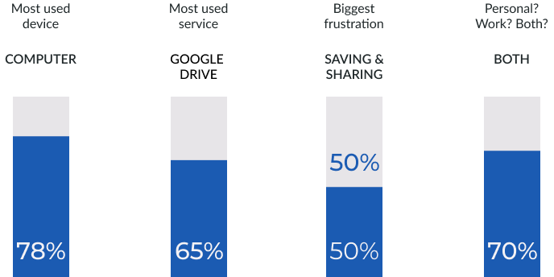
With the help of my SWOT analysis results, I created a main user survey and a follow up survey to answer some main questions that I had about users cloud storage needs. Users stated that they were using cloud storage for both personal and professional purposes. In addition, they shared that their biggest frustrations were both sharing and saving files.
MAJOR TAKEAWAYS: It is important to ask real cloud storage users what their pain points, preferences, and goals are with surveys. Through this process I also learned how each step helps guide the next.
VIEW RESULTS
user personas
NARROW FOCUS, REMAIN USER-CENTERED
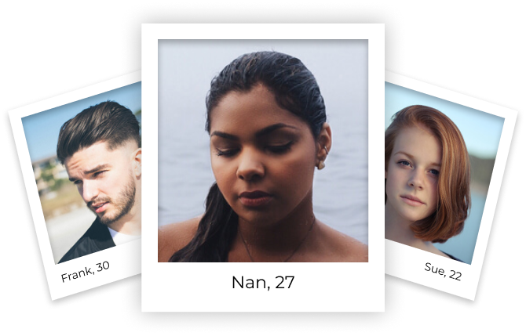
Frank’s frustrations included multiple cloud services, but none specialized for photographs. Nan wanted a cloud service that is easy to use and offered sharing/collaboration. Sue was looking for a cloud service that offered real-time collaboration, and one that had more free options than SmugMug.
MAJOR TAKEAWAYS: I learned that personas are incredibly key to keeping real users in mind. It was challenging to narrow down frustrations and goals, but it was worth it for the product.
VIEW PERSONAS
user STORIES
NARROW FOCUS, REMAIN USER-CENTERED
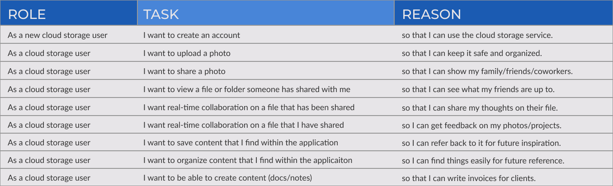
With help of research and the three personas, I created user stories to determine which tasks would be vital for an MVP. It was challenging to just focus on the high priority stories, but ranking them helped me to keep the scope of the project in mind.
MAJOR TAKEAWAYS: Reminding myself that I was working toward an MVP was big at this point. If I were to go back and include more stories, I would add "video" options so that Photosphere could store both photos and videos.
VIEW STORIES
user flows
WHAT PAGES WOULD PHOTOSPHERE NEED?
User flows were created to show how users would realistically work their way through Photosphere. This helped me determine what pages the site would need to have and would not need, and helped me to create a sitemap for Photosphere as well. The biggest challenge here was simply making sure the flows contained all necessary actions and options necessary for MVP.
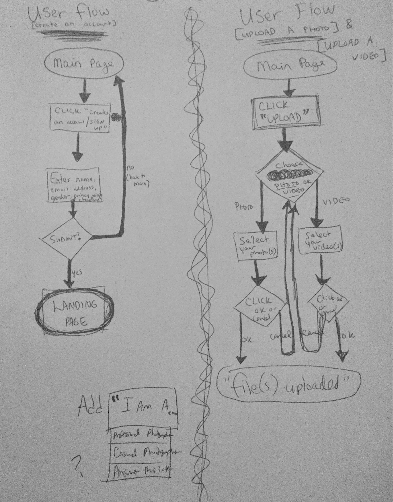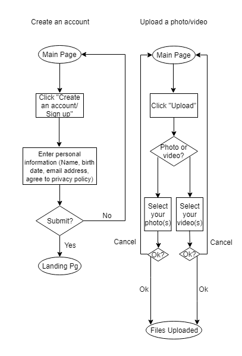
MAJOR TAKEAWAYS: Digitalizing flows is cleaner, easier to read, and can be understood by everyone - the sloppy sketches were good for me to start out with, but I was likely the only one who would read them. These flows helped immensely moving forward toward prototyping.
VIEW FLOWS
lo-fi prototyping
WE HAVE A CLICKABLE PROTOTYPE!
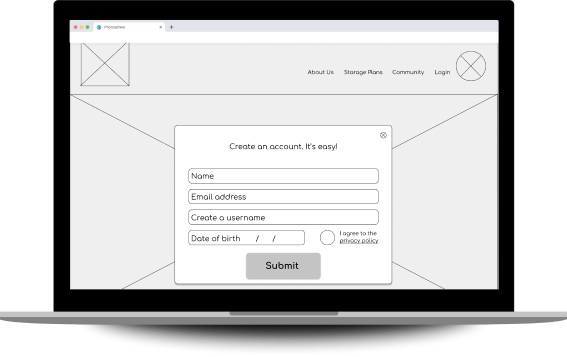
From the flows, I began to sketch concepts for lo-fi wireframes. After sketching, I digitized all wireframes and turned them into a clickable prototype for first rounds of user testing. A huge problem that I encountered was that the navigation on my lo-fi wireframes was (as you can see) far too large.
MAJOR TAKEAWAYS: At this stage it was nice to see clean, digital wireframes. However the biggest issue I had was scale - I had made everything too large.
VIEW LO-FI
USER TESTING
ROUND ONE
I tested three users - some remotely and some in person. This enlightened me to some issues surrounding the “Upload” function and sign-in pages. After thorough testing and user feedback, I was able to make a plan for editing Photosphere further to relieve it of its kinks. Shown below is progress of sign-up pages as a result of round one of user testing.
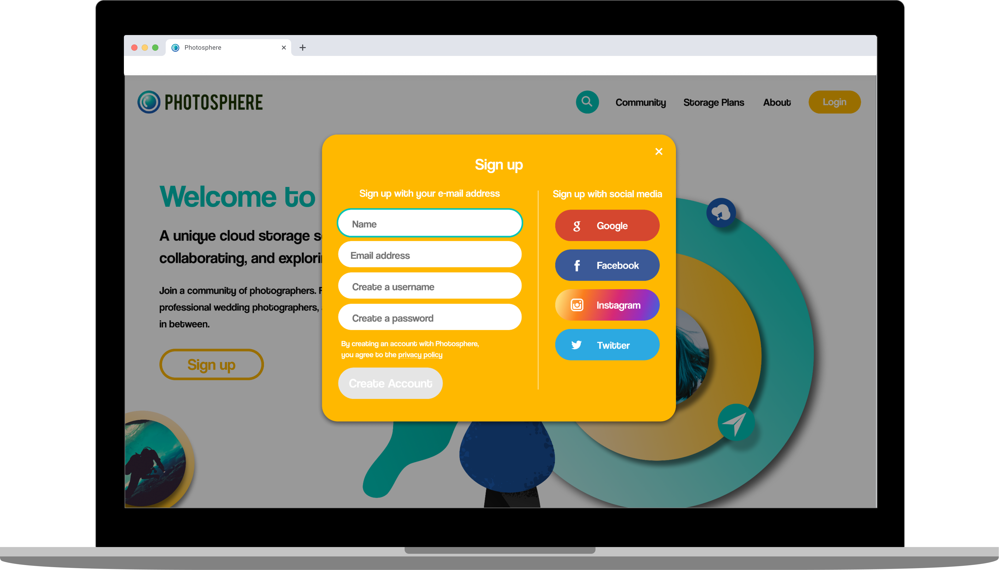
MAJOR TAKEAWAYS: The organize aspect was lumped in with the upload option, which seemed a bit sticky and incomplete. The question was asked: How would one be able to move a photo between albums after uploading? Additionally, users were becoming stuck on location of sign up button on the main page. User testing was invaluable in further iterations.
VIEW RESULTS
brand identity
MINDMAPPING, SKETCHING, VECTORIZING
At this point I began mindmapping, and finally came up with a name that suited the service: Photosphere. I selected a color palette that reflected the trustworthy, bright and sunny nature of the brand. And I began sketching a logo concept. After sketching, I used Adobe Illustrator to digitize many concepts. Through preference testing I was able to iterate further, and users helped Photosphere realize it’s perfect, final logo.
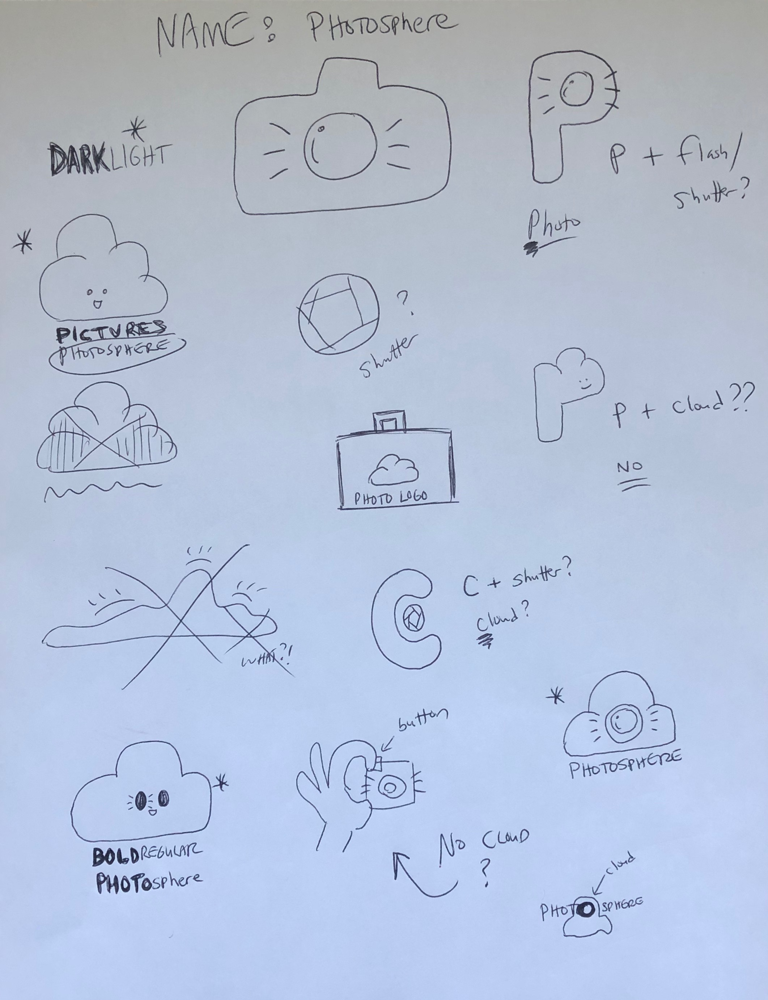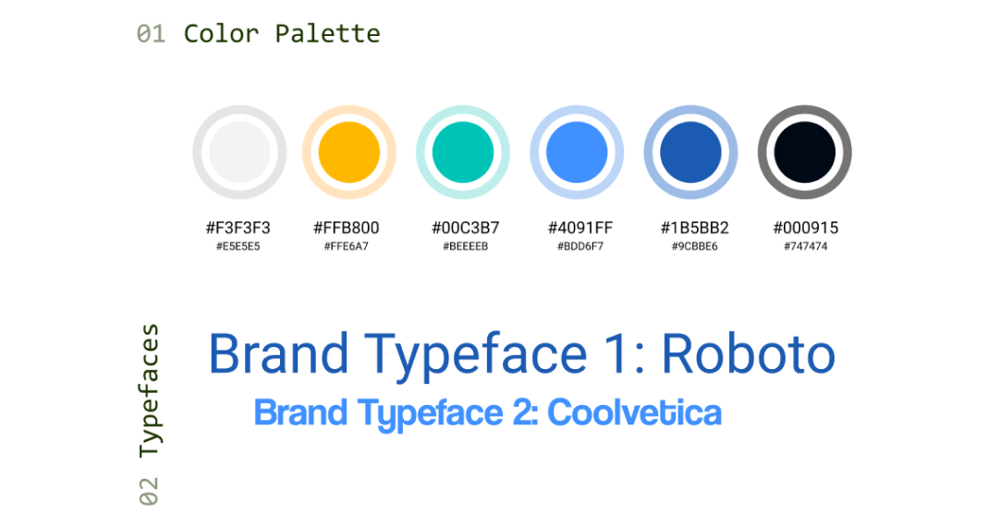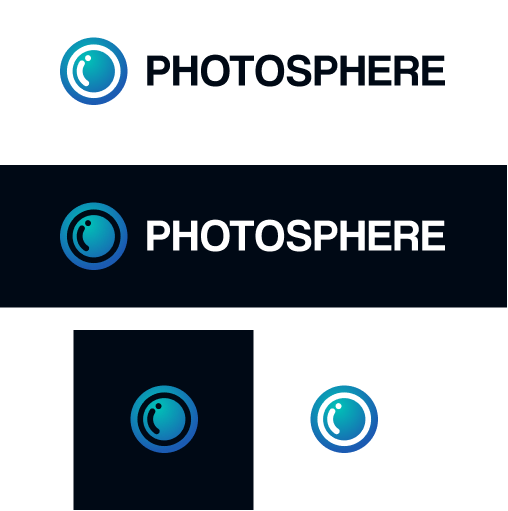
MAJOR TAKEAWAYS: From the competitive analysis, I determined a strong logo was vitally important, and that was achieved with Photosphere's logo. However it was challenging to whittle down my iterations, both sketches and digital. User preference tests through UsabilityHub helped me to choose the strongest logo and color palette.
VIEW PROCESS
hi-fi mockups
CREATING THE ULTIMATE IN LOOK AND FUNCTION
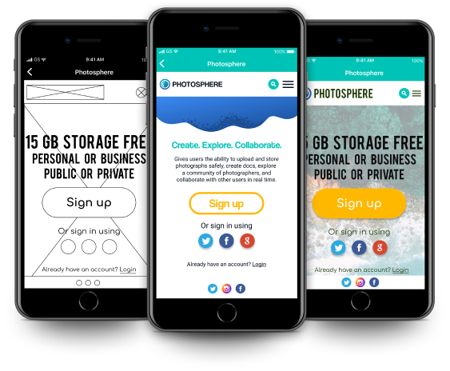
I created high fidelity mockups to create an in depth, finessed version of Photosphere, for users to click through and accomplish the tasks required to produce the MVP. All icons, illustrations, and assets (aside from photographs) were created by me. This is something I would change in the future - it took a long time and I can utilize icon libraries next time.
MAJOR TAKEAWAYS: In the future, I would utilize thenounproject.com or another icon source instead of hand crafting, if possible. Additionally, I would delve even deeper into creating components to make my prototyping process smoother.
VIEW HI-FI
USER TESTING
ROUND TWO
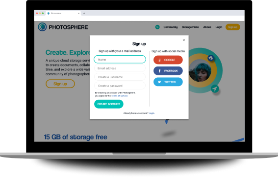
I performed a second round of testing. Once again, I chose three users to test, and was glad to see that after thoroughly observing users flow through Photosphere’s hifi clickable prototype, the issues were mostly resolved. However, I was still able to receive vital feedback on the sign-in user experience and interface to iterate one step further and smooth out Photosphere to be the best MVP it could be before launch.
MAJOR TAKEAWAYS: Visual smoothing happened at this stage, as testing revealed no issues in function.
VIEW RESULTS
CONCLUSION
WOULD I HAVE DONE THINGS THE SAME?
This project was incredible to direct from concept to interactive, high fidelity prototype. A big takeaway from working on this is that “Test early and often” is no joke. I would have started testing even earlier, and would have tested more. I learned that just because I can create all icons and assets from scratch, doesn’t mean that I should. Time is a big factor. I also learned that there is a resource online for almost anything. And that testing users is more than just listening to their words, but also reading their body language and
watching their process intensely.